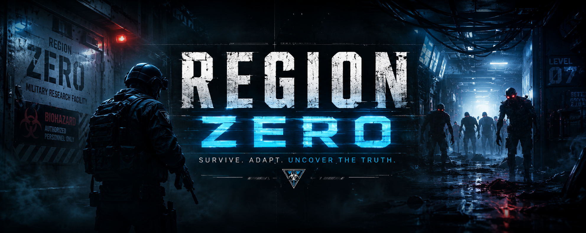

Region Zero is a fast-paced zombie survival game built around procedural exploration, experimental weaponry, and endless replayability. Every run generates a different path through a sprawling military research facility overrun by infected horrors.
Unlock new areas, discover powerful perks, fight increasingly dangerous enemies, and uncover the secrets hidden beneath the facility.
Region Zero is an independently developed zombie survival game built by a solo developer. Every weapon, perk, enemy, region, visual effect, and gameplay system is handcrafted and continuously refined through community feedback.
Deep beneath the surface lies a classified military research complex. Following a catastrophic containment failure, entire sectors were abandoned and sealed away.
Cafeterias, freezers, laboratories, hospitals, and experimental research sectors now serve as battlegrounds between survivors and the infected.
Region Zero is actively developed with feedback from players. Many features, weapons, perks, and gameplay improvements have been inspired directly by community suggestions.
Follow development updates, share your ideas, and help shape the future of Region Zero.